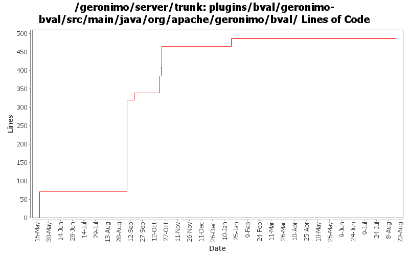

[root]/plugins/bval/geronimo-bval/src/main/java/org/apache/geronimo/bval

| Author | Changes | Lines of Code | Lines per Change |
|---|---|---|---|
| Totals | 12 (100.0%) | 545 (100.0%) | 45.4 |
| vamsic007 | 4 (33.3%) | 322 (59.1%) | 80.5 |
| rickmcguire | 3 (25.0%) | 89 (16.3%) | 29.6 |
| djencks | 2 (16.7%) | 71 (13.0%) | 35.5 |
| xuhaihong | 2 (16.7%) | 62 (11.4%) | 31.0 |
| kevan | 1 (8.3%) | 1 (0.2%) | 1.0 |
GERONIMO-6055 This change limits the ClassLoader searching (getWiredBundle, etc) that will occur during BeanValidation application startup. ValidatorFactory creation time becomes nearly zero. Bean Validation TCK tests passed for me. Would like some validation of this. Will also need to keep an eye out for any potential side effects. There may be better ways of doing this. So, alternatives welcome.
1 lines of code changed in 1 file:
No function change, just update some log level
11 lines of code changed in 1 file:
A little performance improvement, use the static JAXBContext and Schema
51 lines of code changed in 1 file:
Fix bean validation tck deploy errors
60 lines of code changed in 2 files:
Fix bean validation testsuite and tck failures
29 lines of code changed in 1 file:
GERONIMO-5222 Add support for application validation descriptor support for deployed applications
o When the modules are packaged in an EAR, additional processing is required to obtain the validation descriptors
o Each module has its own ValidatorFactory. So, we need to keep track of the module names too in case of EARs.
52 lines of code changed in 1 file:
GERONIMO-5221 Add naming support for Validator and ValidatorFactory
o Cache the factory instance so that a single instance is used per module
9 lines of code changed in 1 file:
GERONIMO-5221 Add naming support for Validator and ValidatorFactory
o DefaultValidator should use configured ValidatorFactory if any
12 lines of code changed in 1 file:
GERONIMO-5222 Add support for application validation descriptor support for deployed applications
o Support for web applications
o ModuleBuilderExtension to add ValidatorFactoryGBean.
o Hook the module builder extension to tomcat builder.
249 lines of code changed in 1 file:
GERONIMO-5221 very basic support for unconfigured Validator and ValidatoryFactory
71 lines of code changed in 2 files: